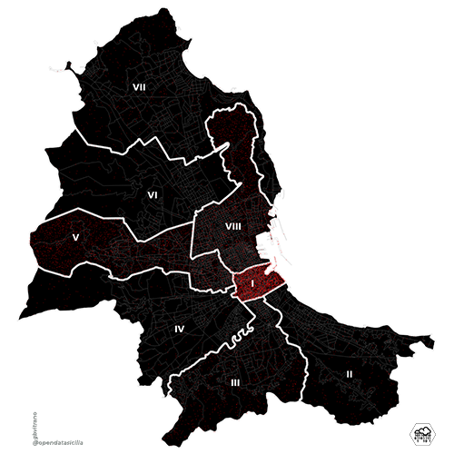
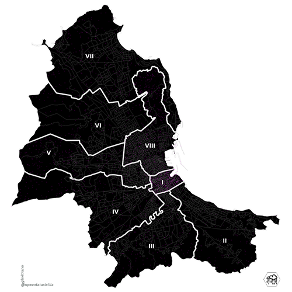
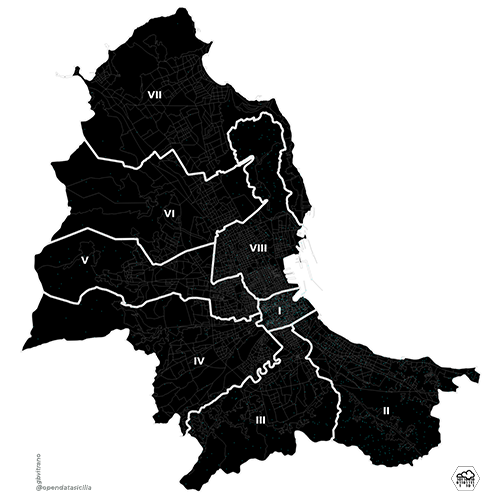

Stai consultando Stranieri residenti a Palermo aggregati per Circoscrizioni e Subregions - 2018


Altre Mappe simili
Residenti Stranieri
Stranieri residenti a Palermo - 2018
Stranieri residenti a Palermo aggregati per Circoscrizioni e Subregions - 2018
South Asia 9.002 residenti
Sub-saharan Africans 5.286 residenti
Europa 3.780 residenti
Other 2.394 residenti
North Africa 2.135 residenti
Southeast Asia 1.781 residenti
East Asia 991 residenti
South Americans 336 residenti
#OpenDataSicilia
Che cos’è
#opendatasicilia e’ una iniziativa civica che si propone di far conoscere e diffondere la cultura dell’open government e le prassi dell’open data nel nostro territorio e aprire una discussione pubblica partecipata.
Chi siamo
Siamo un gruppo di cittadini con diverse storie, competenze, professioni. Siamo accomunati dalla genuina volontà di contribuire a migliorare la qualità della vita della nostra comunità. Lo vogliamo fare con spirito di collaborazione e concretezza.
 |
Ci trovi in questi luoghi: